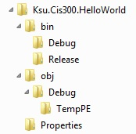
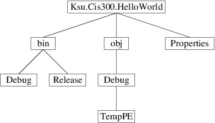

Introduction to Trees
Introduction to Trees
A tree is a mathematical structure having a hierarchical nature. A tree may be empty, or it may consist of:
- a root, and
- zero or more children, each of which is also a tree.
Consider, for example, a folder (or directory) in a Windows file system. This folder and all its sub-folders form a tree — the root of the tree is the folder itself, and its children are the folders directly contained within it. Because a folder (with its sub-folders) forms a tree, each of the sub-folders directly contained within the folder are also trees. In this example, there are no empty trees — an empty folder is a nonempty tree containing a root but no children.
We are only considering actual folders, not shortcuts, symbolic links, etc.
We have at least a couple of ways of presenting a tree graphically. One way is as done within Windows Explorer:

Here, children are shown in a vertically-aligned list, indented under the root. An alternative depiction is as follows:

Here, children are shown by drawing lines to them downward from the root.
Other examples of trees include various kinds of search spaces. For example, for a chess-playing program, the search for a move can be performed on a game tree whose root is a board position and whose children are the game trees formed from each board position reachable from the root position by a single move. Also, in the sections that follow, we will consider various data structures that form trees.
The .NET Framework provides access to the folders in a file system tree
via the
DirectoryInfo
class, found in the System.IO namespace. This class has a
constructor
that takes as its only parameter a string giving the path to a
folder (i.e., a directory) and constructs a DirectoryInfo describing
that folder. We can obtain such a string from the user using a
FolderBrowserDialog.
This class is similar to a
file
dialog and can be added
to a form in the Design window in the same way. If uxFolderBrowser is
a FolderBrowserDialog, we can use it to obtain a DirectoryInfo
for a user-selected folder as follows:
if (uxFolderBrowser.ShowDialog() == DialogResult.OK)
{
DirectoryInfo folder = new DirectoryInfo(uxFolderBrowser.SelectedPath);
// Process the folder
}
Various properties of a DirectoryInfo give information about the folder; for example:
- Name gets the name of the folder as a string.
- FullName gets the full path of the folder as a string.
- Parent gets the parent folder as a DirectoryInfo.
In addition, its
GetDirectories
method takes no parameters and returns a DirectoryInfo[ ] whose
elements describe the contained folders (i.e., the elements of the array
are the children of the folder). For example, if d refers to a
DirectoryInfo for the folder Ksu.Cis300.HelloWorld from the
figures above, then d.GetDirectories() would return a 3-element
array whose elements describe the folders bin, obj, and
Properties. The following method illustrates how we can write the
names of the folders contained within a given folder to a
StreamWriter:
/// <summary>
/// Writes the names of the directories contained in the given directory
/// (excluding their sub-directories) to the given StreamWriter.
/// </summary>
/// <param name="dir">The directory whose contained directories are to
/// be written.</param>
/// <param name="output">The output stream to write to.</param>
private void WriteSubDirectories(DirectoryInfo dir, StreamWriter output)
{
foreach (DirectoryInfo d in dir.GetDirectories())
{
output.WriteLine(d.Name);
}
}
For a more interesting problem, suppose we want to write to a StreamWriter the structure of an entire folder, as follows:
Ksu.Cis300.HelloWorld
bin
Debug
Release
obj
Debug
TempPE
Properties
We can break this task into the following steps:
-
Write the name of the folder:
Ksu.Cis300.HelloWorld
-
Write the structure of each child folder, indented one level (i.e., two spaces):
-
First child:
bin Debug Release -
Second child:
obj Debug TempPE -
Third child:
Properties
-
Note that writing the structure of a child folder is an instance of the original problem that we want to solve - i.e., writing the structure of a folder. The only difference is that the folders are different and the amount of indentation is different. We can solve such a problem using a technique called recursion. Recursion involves a method calling itself. Because of the recursive nature of a tree (i.e., each child of a tree is also a tree), recursion is commonly used in processing trees.
In order to use recursion, we first must define precisely what we want our method to accomplish, wherever it might be called. For this problem, we want to write to a given StreamWriter a list of all the folders contained within a given folder, including the given folder itself and all sub-folders in the entire tree, where each folder is indented two spaces beyond its parent’s indentation. Furthermore, the entire tree below a given folder (i.e., excluding the folder itself) should be listed below that folder, but before any folders that are outside that folder. In order to write such a method, we need three parameters:
- a DirectoryInfo giving the root folder;
- a StreamWriter where the output is to be written; and
- an int giving the level of indentation for the root folder, where each level of indentation is two spaces.
Because the root folder must be written first, we begin there. We first must write two blanks for every level of indentation, then write the name of the root folder:
/// <summary>
/// Writes the directory structure for the given root directory to the
/// given StreamWriter, indenting all entries to the given indentation
/// level (incomplete).
/// </summary>
/// <param name="root">The root directory.</param>
/// <param name="output">The output stream to which to write</param>
/// <param name="level">The current indentation level.</param>
private void WriteTree(DirectoryInfo root, StreamWriter output, int level)
{
for (int i = 0; i < level; i++)
{
output.Write(" ");
}
output.WriteLine(root.Name);
// We now need to write the sub-directories . . .
}
We can get the children using root.GetDirectories(). Each of the
elements of the array this method returns will be a DirectoryInfo
whose structure we want to write. Looking back at how we described what
we want the WriteTree method to accomplish, we see that it is
exactly what we want to do for each child. We can therefore make a
recursive call for each child, specifying that the indentation level
should be one deeper than the level for root:
/// <summary>
/// Writes the directory structure for the given root directory to the
/// given StreamWriter, indenting all entries to the given indentation
/// level (incomplete).
/// </summary>
/// <param name="root">The root directory.</param>
/// <param name="output">The output stream to which to write</param>
/// <param name="level">The current indentation level.</param>
private void WriteTree(DirectoryInfo root, StreamWriter output, int level)
{
for (int i = 0; i < level; i++)
{
output.Write(" ");
}
output.WriteLine(root.Name);
foreach (DirectoryInfo d in root.GetDirectories())
{
WriteTree(d, output, level + 1);
}
}
This method accomplishes the desired task, provided the directory tree does not contain symbolic links or anything similar that might be represented using a DirectoryInfo, but is not an actual folder. While it is possible to detect these and avoid following them, we will not consider that here.
There is something that may seem mysterious about what we have done. In order to convince ourselves that this method is written correctly, we need to know that the recursive calls work correctly; however, the recursive calls are to the same method. Our reasoning therefore seems circular. However, we are actually using a mathematical principle from the discipline of formally proving software correctness: in order to prove that a recursive method meets its specification we may assume that any recursive calls meet that same specification, provided that these recursive calls are all on smaller problem instances.
The restriction that recursive calls are on smaller problem instances is what avoids circular reasoning regarding recursion. We associate with each problem instance a nonnegative integer describing its size. For a problem involving a tree, this size is typically the number of nodes in the tree, where a node is a root of some subtree. Because every node in a child is also in the tree containing the child, but the root of the containing tree is not in the child, a child is always smaller, provided the tree is finite. (For directory trees, if the underlying file system is a Windows system, the tree will be finite; however if it is a non-Windows system, the trees may appear to Windows as being infinite - the above method actually will not work in such cases.)
The validity of this strategy is based on the fact that for any method, the following three statements cannot be simultaneously true:
- All of the method’s recursive calls (if there are any) are on inputs of smaller size, where the size is defined to be a nonnegative integer.
- When the method is given any input, if all of the method’s recursive calls produce correct results, then the method itself produces a correct result.
- There is at least one input for which the method does not produce a correct result.
Thus, if we can ensure that Statements 1 and 2 are true, then Statement 3 must be false; i.e., the method will be correct. To ensure Statement 2, we only need to concern ourselves with cases in which all recursive calls produce correct results; hence, we simply assume that each recursive call produces correct results.
To see why the three statements above cannot be simultaneously true, let’s first suppose Statement 3 is true. Let S be the set of all inputs for which the method does not produce a correct result. Then because Statement 3 is true, this set is nonempty. Because each input in S has a nonnegative integer size, there is an input I in S with smallest size. Now suppose Statement 1 is true. Then when the method is run on input I, each of the recursive calls is given an input smaller than I; hence, because I is a smallest input in S, none of these inputs is in S. Therefore, each of the recursive calls produces a correct result. We therefore have an input, I on which all of the method’s recursive calls produce correct results, but the method itself does not produce a correct result. Statement 2 is therefore false.
Once we understand this strategy, recursion is as easy to use as calling a method written by someone else. In fact, we should treat recursive calls in exactly the same way — we need to understand what the recursive call is supposed to accomplish, but not necessarily how it accomplishes it. Furthermore, because processing trees typically involves solving the same problem for multiple nodes in the tree, recursion is the natural technique to use.
A recursive method for processing a tree will break down into cases, each fitting into one of the following categories:
- A base case is a case that is simple enough that a recursive call is not needed. Empty trees are always base cases, and sometimes other trees are as well.
- A recursive case is a case that requires one or more recursive calls to handle it.
A recursive method will always contain cases of both these types. If there were no base cases, the recursion would never terminate. If there were no recursive cases, the method wouldn’t be recursive. Most recursive methods are, in fact, structured as an if-statement, with some cases being base cases and some cases being recursive cases. However, for some recursive methods, such as WriteTree above, the base cases aren’t as obvious. Note that in that method, the recursive call appears in a loop; hence, if the loop doesn’t iterate (because the array returned is empty), no recursive calls are made. Furthermore, if the directory tree is finite, there must be some sub-directories that have no children. When the GetDirectories method is called for such a directory, it returns an empty array. These directories are therefore the base cases.
The WriteTree method above is actually an example of processing an entire tree using a preorder traversal. In a preorder traversal, the root of the tree is processed first, then each of the children is processed using a recursive call. This results in each node’s being processed prior to any node contained in any of its children. For the WriteTree method, this means that the name of any folder is written before any folders contained anywhere within it.
When debugging a recursive method, we should continue to think about it in the same way — that is, assume that all recursive calls work correctly. In order to isolate an error, we need to find an instance that causes an error, but whose recursive calls all work correctly. It will almost always be possible to find such a case that is small — in fact, small cases tend to be the most likely ones to fit this description. When debugging, it therefore makes sense to start with the smallest cases, and slowly increase their size until one is found that causes an error. When using the debugger to step through code, first delete all breakpoints from this method, then use Step Over to step over the recursive calls. If a recursive call doesn’t work correctly, you have found a smaller instance that causes an error — work on that instance instead. Otherwise, you can focus on the top-level code for the instance you are debugging. This is much easier to think about that trying to work through different levels of recursion.
There are times when it is useful to know exactly what happens when a recursive call (or any method call, for that matter) is made. Prior to transferring control to the top of the method being called, all local variables and the address of the current code location are pushed onto the call stack. This call stack is just like any other stack, except that it has a smaller amount of space available to it. You can, in fact, examine the call stack when debugging — from the “Debug” menu, select “Windows -> Call Stack”. This will open a window showing the contents of the call stack. The line on top shows the line of code currently ready for execution. Below it is the line that called the current method, and below that line is the line that called that method, etc. By double-clicking on an entry in the call stack, you can use the other debugging tools to examine the values of the local variables for the method containing that line of code. If this method is recursive, the values displayed for the local variables are their values at that level of recursion.
This only applies to the values stored in local variables - in particular, if a local variable is a reference type, the value of the object to which it refers will not revert to its earlier state. For example, if a local variable is an array, the debugger will show the value of this variable to refer to the array that it referred to at that point, but the values shown in that array will be its current values.
Once consequence of method calls using a call stack with limited space available is that moderately deep recursion can fill up the call stack. If this happens, a StackOverflowException will be thrown. Thus, infinite recursion will always throw this exception, as will recursion that is nested too deeply. For this reason, it is usually a bad idea to use recursion on a linked list - if the list is very long, the recursion will be nested too deeply. We must also take care in using recursion with trees, as long paths in a tree can lead to a StackOverflowException. Due to the branching nature of trees, however, we can have very large trees with no long paths. In fact, there are many cases in which we can be sure that a tree doesn’t contain any long paths. In such cases, recursion is often a useful technique.